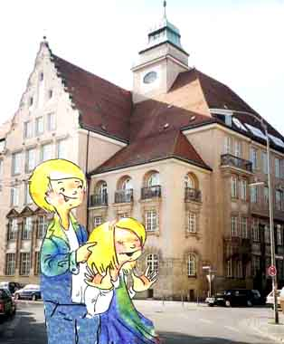
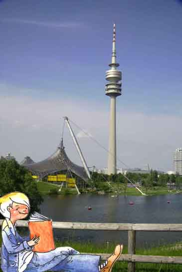
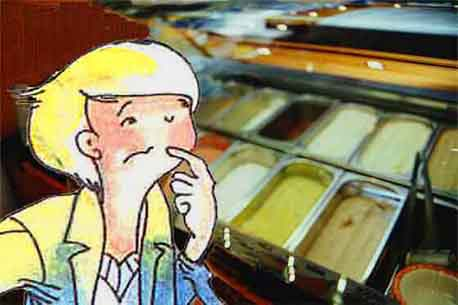
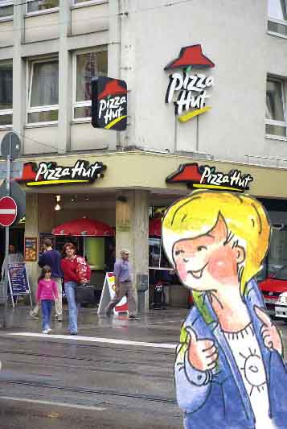
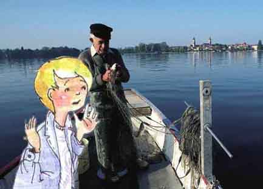
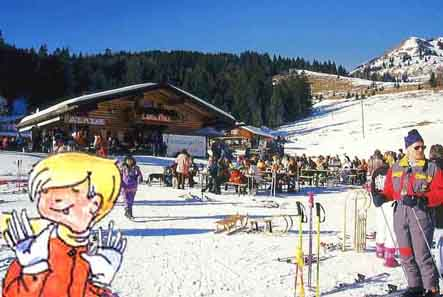

Hallo, ich bin der Florian, Florian Sander. Und das ist meine Schwester Anna. Wir gehen zusammen auf das Gisela-Gymnasium. Dieses Jahr wird unser Gymnasium 100 Jahre alt. Das werden wir natürlich ordentlich feiern.

Ich lese gern. Besonders in den Ferien. Mein Lieblingsautor ist Karl May. Seine Indianerbücher finde ich sehr spannend. Ich lese meistens im Bett. Und im Sommer oft draußen, auf der Wiese im Olympiapark.

Nicht weit von unserem Haus gibt es ein kleines Eiscafé. Da gehe ich oft hin. Bei so vielen Eissorten muss ich mir jedes Mal echt lange überlegen. Deswegen kaufe ich mir zwei-drei Kugeln, weil ich mich nicht entscheiden kann. Am liebsten mag ich aber Erdbeereis mit Honig und Nüssen.

Anna und ich gehen oft in die Pizzeria. Wenn unsere Eltern nicht zu Hause sind, können wir den Pizzaservice anrufen. Die bringen dann die Pizza ins Haus. Und Anna hat auch ein Rezept für Pizza. Sie belegt den Teig mit Tomaten, Salami und Kräutern. Dann noch eine leckere Soße drauf und fertig ist die Pizza!

Unsere Großeltern wohnen in Bad Tölz. Es ist eine kleine Stadt südlich von München. Mein Opa ist ein leidenschaftlicher Angler. Oft nimmt er mich auch mit. Das letzte Mal hat ein so großer Hecht angebissen!

Im Winter fahren wir oft in die Berge. Da kann man rodeln und Ski fahren.